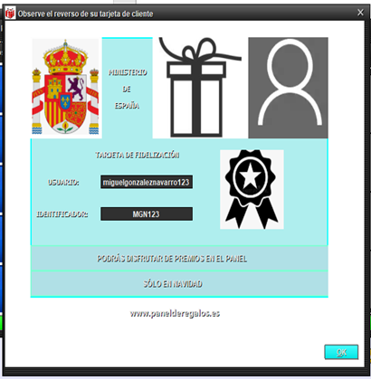

Para saber donde está el identificador, seleccionamos el botón rojo señalado por la flecha,
nos enviará a otra ventana que será mostrada a continuación.
El identificador aparece debajo del usuario, en este caso sería “MGN123”, aunque recordemos que
este usuario no es cliente del panel de regalos, los que son clientes están en el fichero “clientes.dat”.
